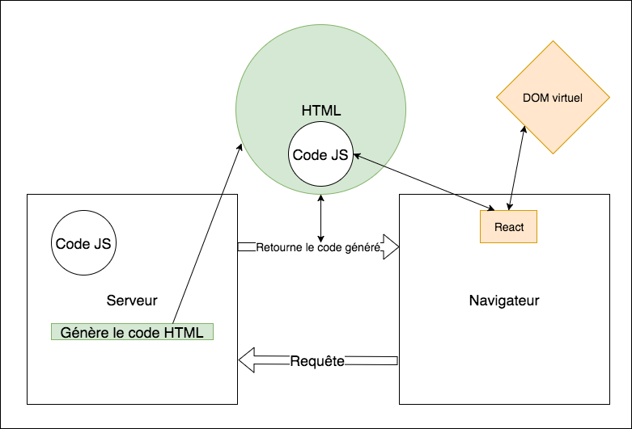
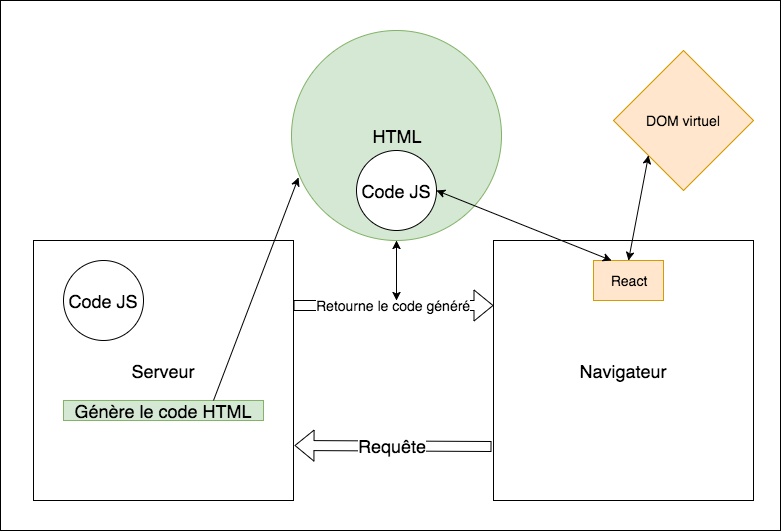

Coucou, je suis Claire Coloma
- Développeuse web et mobile chez

 @_ClaireColoma
@_ClaireColoma
Coucou, je suis Suzanne Favot
- Développeuse web @
- @SFavot
PHP Tour Nantes - Claire Coloma et Suzanne Favot - 18 mai 2017
@_ClaireColoma @SFavot


 

On build le code Javascript (par exemple avec Webpack) dans deux fichiers server-bundle.js et client-bundle.js.